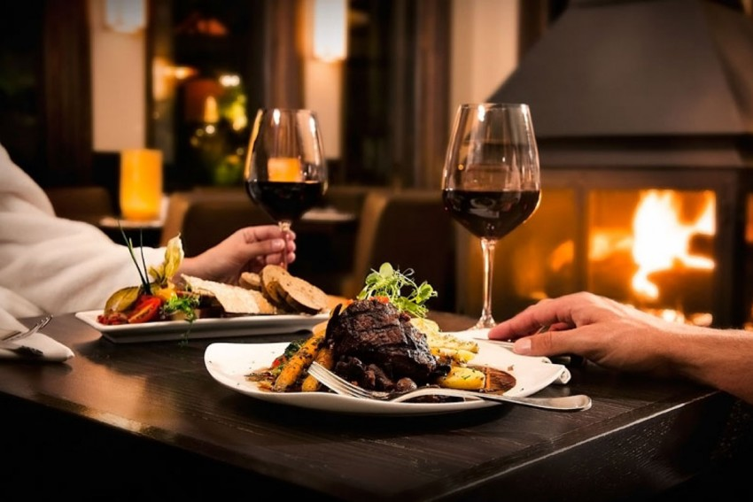
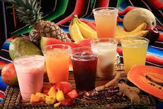
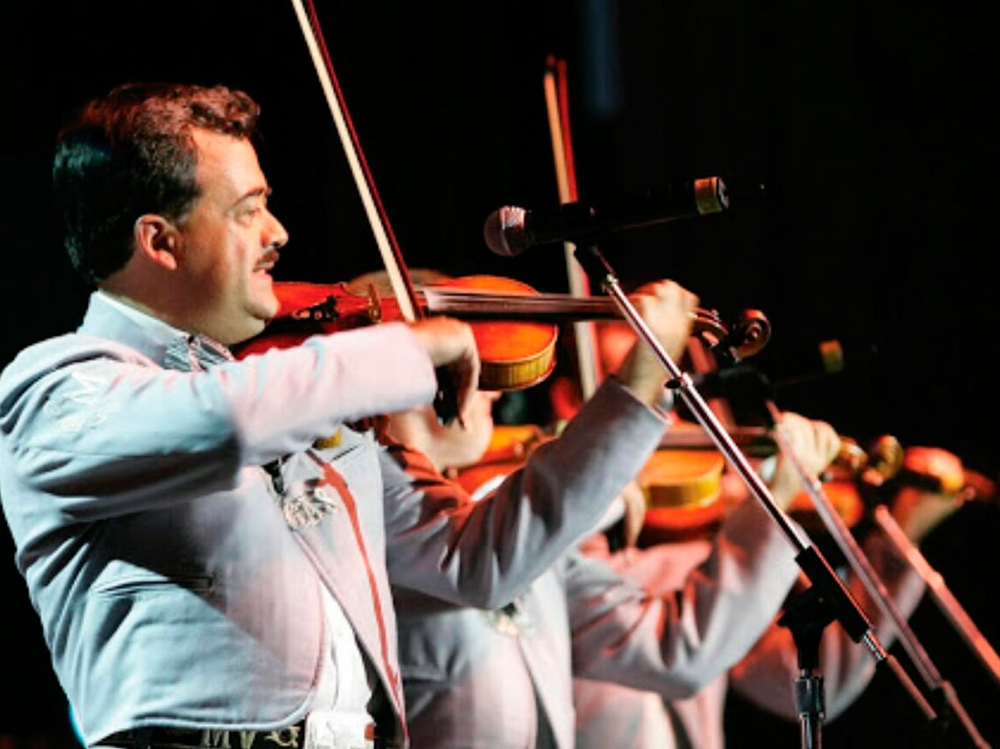

Acerca de Nosotros
Restaurante el Mexicano inicio en el año de 1992 en la Ciudad de San Luis Potosí comenzando como un pequeño restaurante ubicado en el centro historico de la misma, bajo la administración de su propietario Federico Diaz Castro.Al principio el restaurante solamente ofrecía servicios de comida típica de la ciudad.

Hasta la fecha Restaurante el Mexicano cuenta con cinco restaurantes úbicados en diferentes puntos de la ciudad siendo el quinto el último inaugurado en el año 2005.
Actualmente el restaurante cuenta con más servicios entre los cuales se encuentra servicios de comida en el mismo, servicios en linea entre los cuales se encuentra pedido a domicilio y reservaciones para asistir a degustar los diferentes platillos que se ofrecen.

Restaurante el Mexicano ofrece más 55 platillos típicos de Nuestro México lindo entre los más populares se encuentran Mole Poblano, Pozole, Chile en Nogada Cabrito, Torta Ahogada entre otros.Cabe tambien mencionar que se cuenta con diferentes prostres desde los salados a los dulces.

Tambien ofrece una amplia gama de bebidas mexicanas entre las cuales se encuentran las aguas de fruta natural y la mejor selección de vinos y bebidas alcohólicas del país.
El restaurante tambien cuenta con música en vivo la cual es ofreccida por un grupo de músicos que interpretan diversas canciones de los cantautores más reconocidos de nuestro país.
